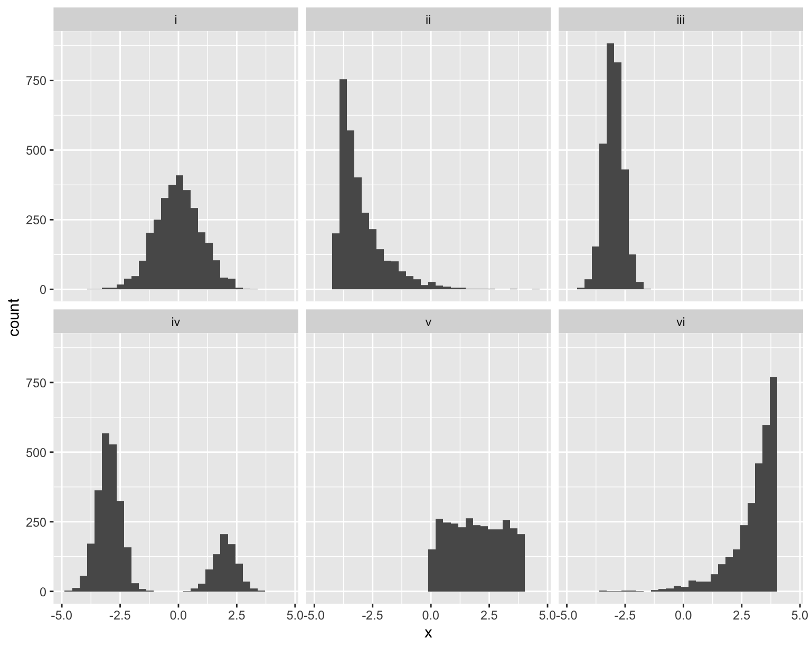
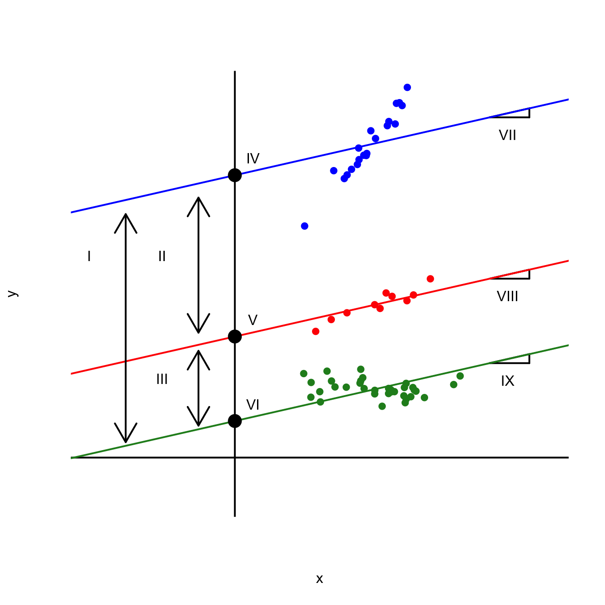
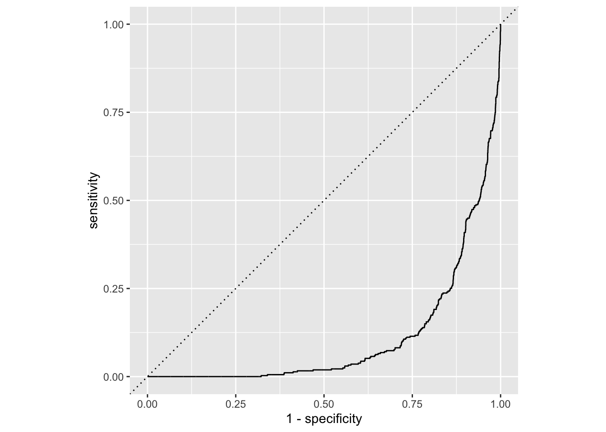
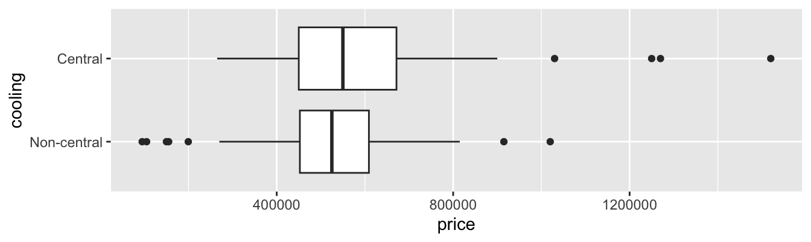
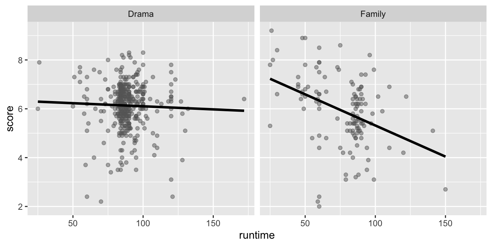
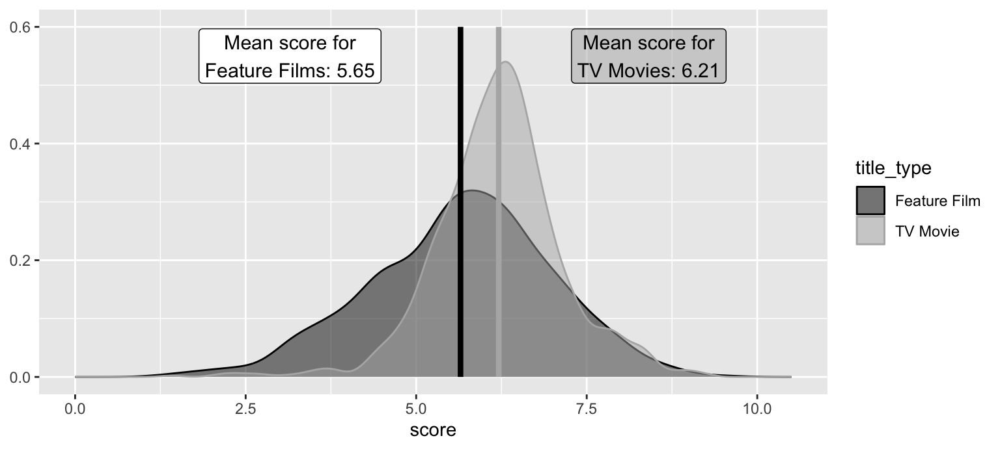
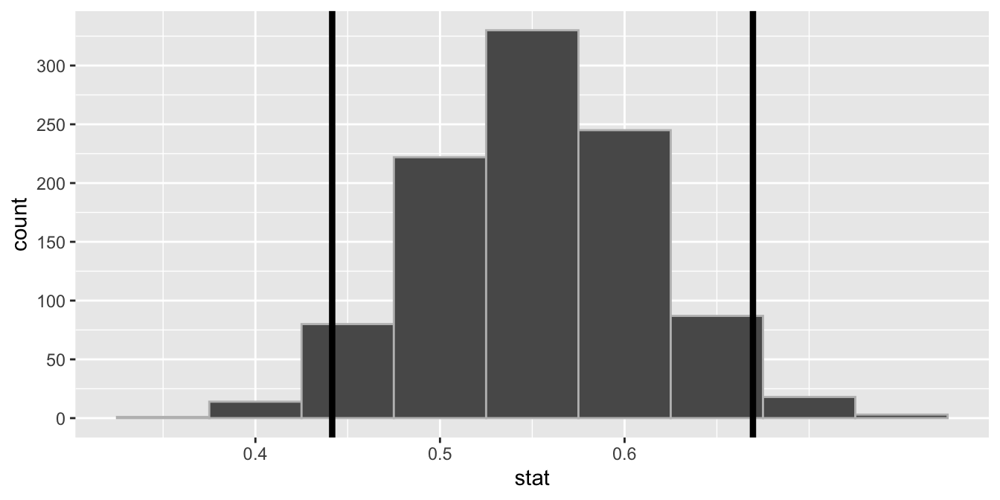
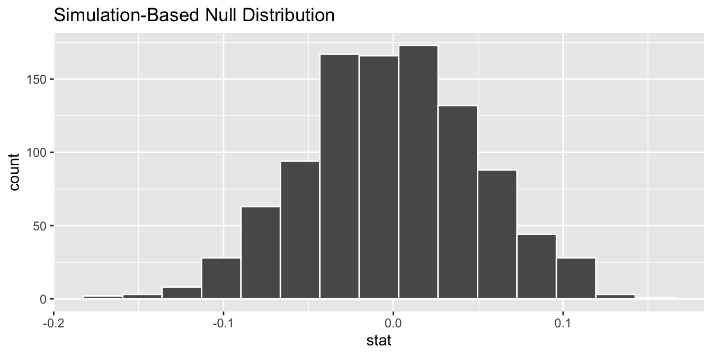

| choice | mean | median | standard deviation |
|---|---|---|---|
| a | 3.0 | 3.3 | 1.0 |
| b | 0.0 | 0.0 | 1.0 |
| c | -3.0 | -3.3 | 1.0 |
| d | -3.0 | -3.0 | 0.4 |
| e | -1.7 | -2.8 | 2.2 |
| f | 2.0 | 1.9 | 1.2 |
Our final exam is on Friday May 1 from 2pm to 5pm in Griffith Theater (our usual classroom). Here’s what you need to know:
The study advice here still applies. Below are 47 new practice problems to sink your teeth into, but because the final exam is cumulative, the study guides for Midterms 1 and 2 remain very relevant. You should regard the true final exam study guide as the “full join” of all three guides.
To start, attempt all of the problems below without resources. Make note of your pain points and blind spots along the way. That might give you an idea of the stuff you would benefit from if you had it on a cheat sheet.
Can you define these terms?
Match the histogram to the set of numerical summaries. There is exactly one unique match for each.

| choice | mean | median | standard deviation |
|---|---|---|---|
| a | 3.0 | 3.3 | 1.0 |
| b | 0.0 | 0.0 | 1.0 |
| c | -3.0 | -3.3 | 1.0 |
| d | -3.0 | -3.0 | 0.4 |
| e | -1.7 | -2.8 | 2.2 |
| f | 2.0 | 1.9 | 1.2 |
Here’s a nonsense dataset that I made up:
glimpse(df)Rows: 65
Columns: 3
$ x <dbl> 4.892947, 4.232442, 1.892767, 4.730670, 5.373811, 4.156704, 4.44…
$ y <dbl> 8.197365, 39.317266, 9.828075, 18.352456, 20.915403, 19.258701, …
$ color <fct> forestgreen, blue, forestgreen, red, red, red, blue, red, forest…Imagine you run this code:
linear_reg() |>
fit(y ~ x + color, df) |>
tidy()The output would be a lil’ table like this:
term |
estimate |
|---|---|
(Intercept) |
\(b_0\) |
x |
\(b_1\) |
colorblue |
\(b_2\) |
colorforestgreen |
\(b_3\) |
A plot of the model fit might look something like this:

Match the labeled features of the plot to the correct quantity listed below:
Note: Some of these quantities might go unused, and some might be used more than once.
Below are five examples of code that returns an error or a warning or otherwise behaves in a strange and unexpected way. In each case, identify the mistake and explain how it should be fixed.
Consider these:
students # A tibble: 3 × 2
id name
<int> <chr>
1 1 Ana
2 2 Ben
3 3 Chrisgrades# A tibble: 3 × 2
id grade
<chr> <chr>
1 1 A
2 2 B
3 3 A It seems like a lovely day for some joining, but then disaster strikes:
left_join(students, grades, by = "id")Error in `left_join()`:
! Can't join `x$id` with `y$id` due to incompatible types.
ℹ `x$id` is a <integer>.
ℹ `y$id` is a <character>.Why?
1,500 people responded to a survey asking “Overall, how would you describe the impact of the many changes (transfer portal, athlete name, image and likeness (NIL) compensation, conference realignments) taking place in Division I college athletics?” Here is the summary of responses:
# A tibble: 12 × 3
age opinion n
<fct> <fct> <dbl>
1 18-44 Very positive 78
2 18-44 Somewhat positive 176
3 18-44 Neutral 162
4 18-44 Somewhat negative 50
5 18-44 Very negative 36
6 18-44 Unsure 197
7 45+ Very positive 41
8 45+ Somewhat positive 121
9 45+ Neutral 186
10 45+ Somewhat negative 146
11 45+ Very negative 97
12 45+ Unsure 210How come this doesn’t give us the stacked barchart visualizing the breakdown of responses by age?
ggplot(survey_counts, aes(x = age, y = n, fill = opinion)) +
geom_bar(position = "fill")Error in `geom_bar()`:
! Problem while computing stat.
ℹ Error occurred in the 1st layer.
Caused by error in `setup_params()`:
! `stat_count()` must only have an x or y aesthetic.Consider these two datasets:
sales_taxes <- read_csv("data/sales-taxes-25.csv")
us_regions <- read_csv("data/us-regions.csv")
glimpse(sales_taxes)Rows: 51
Columns: 7
$ state <chr> "Alabama", "Alaska", "Arizona", "Arkansas", "Califo…
$ state_tax_rate <dbl> 4.000, 0.000, 5.600, 6.500, 7.250, 2.900, 6.350, 0.…
$ state_tax_rank <dbl> 40, 46, 28, 9, 1, 45, 12, 46, 17, 40, 40, 17, 13, 2…
$ avg_local_tax_rate <dbl> 5.44, 1.82, 2.92, 2.98, 1.73, 4.96, 0.00, 0.00, 1.0…
$ max_local <dbl> 11.000, 7.850, 5.300, 6.125, 5.250, 8.300, 0.000, 0…
$ combined_tax_rate <dbl> 9.44, 1.82, 8.52, 9.48, 8.98, 7.86, 6.35, 0.00, 7.0…
$ combined_rank <dbl> 5, 46, 11, 3, 7, 16, 33, 47, 24, 19, 45, 37, 8, 25,…glimpse(us_regions)Rows: 50
Columns: 2
$ state_name <chr> "Maine", "New Hampshire", "Vermont", "Massachusetts", "Rhod…
$ region <chr> "Northeast", "Northeast", "Northeast", "Northeast", "Northe…Why didn’t this work to join the two data frames?
sales_taxes |>
full_join(us_regions,
by = state == state_name)Error: object 'state' not foundImagine we wanted to pivot wider this lil’ baby data frame:
# A tibble: 7 × 3
student quiz score
<chr> <chr> <dbl>
1 Alice Quiz1 90
2 Alice Quiz1 95
3 Alice Quiz2 88
4 Bob Quiz1 70
5 Bob Quiz2 75
6 Charlie Quiz1 85
7 Charlie Quiz2 92Why is it screaming at me?
df |>
pivot_wider(
names_from = quiz,
values_from = score
)Warning: Values from `score` are not uniquely identified; output will contain list-cols.
• Use `values_fn = list` to suppress this warning.
• Use `values_fn = {summary_fun}` to summarise duplicates.
• Use the following dplyr code to identify duplicates.
{data} |>
dplyr::summarise(n = dplyr::n(), .by = c(student, quiz)) |>
dplyr::filter(n > 1L)# A tibble: 3 × 3
student Quiz1 Quiz2
<chr> <list> <list>
1 Alice <dbl [2]> <dbl [1]>
2 Bob <dbl [1]> <dbl [1]>
3 Charlie <dbl [1]> <dbl [1]>Recall the dataset on spam emails:
email# A tibble: 3,921 × 21
spam exclaim_mess to_multiple from cc sent_email time
<fct> <dbl> <fct> <fct> <int> <fct> <dttm>
1 0 0 0 1 0 0 2012-01-01 01:16:41
2 0 1 0 1 0 0 2012-01-01 02:03:59
3 0 6 0 1 0 0 2012-01-01 11:00:32
4 0 48 0 1 0 0 2012-01-01 04:09:49
5 0 1 0 1 0 0 2012-01-01 05:00:01
6 0 1 0 1 0 0 2012-01-01 05:04:46
7 0 1 1 1 0 1 2012-01-01 12:55:06
8 0 18 1 1 1 1 2012-01-01 13:45:21
9 0 1 0 1 0 0 2012-01-01 16:08:59
10 0 0 0 1 0 0 2012-01-01 13:12:00
# ℹ 3,911 more rows
# ℹ 14 more variables: image <dbl>, attach <dbl>, dollar <dbl>, winner <fct>,
# inherit <dbl>, viagra <dbl>, password <dbl>, num_char <dbl>,
# line_breaks <int>, format <fct>, re_subj <fct>, exclaim_subj <dbl>,
# urgent_subj <fct>, number <fct>Here is a regression model trained on all of these data:
log_fit <- logistic_reg() |>
fit(spam ~ ., data = email)The in-sample predictions of the model are here:
email_aug <- augment(log_fit, email)
email_aug# A tibble: 3,921 × 24
.pred_class .pred_0 .pred_1 spam exclaim_mess to_multiple from cc
<fct> <dbl> <dbl> <fct> <dbl> <fct> <fct> <int>
1 0 0.867 1.33e- 1 0 0 0 1 0
2 0 0.943 5.70e- 2 0 1 0 1 0
3 0 0.942 5.78e- 2 0 6 0 1 0
4 0 0.920 7.96e- 2 0 48 0 1 0
5 0 0.903 9.74e- 2 0 1 0 1 0
6 0 0.901 9.87e- 2 0 1 0 1 0
7 0 1.000 7.89e-12 0 1 1 1 0
8 0 1.000 1.24e-12 0 18 1 1 1
9 0 0.862 1.38e- 1 0 1 0 1 0
10 0 0.922 7.76e- 2 0 0 0 1 0
# ℹ 3,911 more rows
# ℹ 16 more variables: sent_email <fct>, time <dttm>, image <dbl>,
# attach <dbl>, dollar <dbl>, winner <fct>, inherit <dbl>, viagra <dbl>,
# password <dbl>, num_char <dbl>, line_breaks <int>, format <fct>,
# re_subj <fct>, exclaim_subj <dbl>, urgent_subj <fct>, number <fct>To see how well the model did, we can compute the classification error rates for different thresholds and summarize the results with the ROC curve:
email_aug |>
roc_curve(truth = spam, .pred_0, event_level = "second") |>
ggplot(aes(x = 1 - specificity, y = sensitivity)) +
geom_path() +
geom_abline(lty = 3) +
coord_equal() +
labs(
x = "1 - specificity",
y = "sensitivity"
)
Why does this model suck so hard?
Recall the Pokémon data from AE 23:
pokemon <- read_csv("data/pokemon.csv") |>
mutate(
is_legendary = as_factor(is_legendary)
)
glimpse(pokemon)Rows: 924
Columns: 17
$ name <chr> "Bulbasaur", "Ivysaur", "Venusaur", "Mega Venusaur", "…
$ generation <dbl> 1, 1, 1, 1, 1, 1, 1, 1, 1, 1, 1, 1, 1, 1, 1, 1, 1, 1, …
$ type_1 <chr> "Grass", "Grass", "Grass", "Grass", "Fire", "Fire", "F…
$ type_2 <chr> "Poison", "Poison", "Poison", "Poison", NA, NA, "Flyin…
$ height_m <dbl> 0.7, 1.0, 2.0, 2.4, 0.6, 1.1, 1.7, 1.7, 1.7, 0.5, 1.0,…
$ weight_kg <dbl> 6.9, 13.0, 100.0, 155.5, 8.5, 19.0, 90.5, 110.5, 100.5…
$ total_points <dbl> 318, 405, 525, 625, 309, 405, 534, 634, 634, 314, 405,…
$ hp <dbl> 45, 60, 80, 80, 39, 58, 78, 78, 78, 44, 59, 79, 79, 45…
$ attack <dbl> 49, 62, 82, 100, 52, 64, 84, 130, 104, 48, 63, 83, 103…
$ defense <dbl> 49, 63, 83, 123, 43, 58, 78, 111, 78, 65, 80, 100, 120…
$ sp_attack <dbl> 65, 80, 100, 122, 60, 80, 109, 130, 159, 50, 65, 85, 1…
$ sp_defense <dbl> 65, 80, 100, 120, 50, 65, 85, 85, 115, 64, 80, 105, 11…
$ speed <dbl> 45, 60, 80, 80, 65, 80, 100, 100, 100, 43, 58, 78, 78,…
$ catch_rate <dbl> 45, 45, 45, 45, 45, 45, 45, 45, 45, 45, 45, 45, 45, 25…
$ base_friendship <dbl> 70, 70, 70, 70, 70, 70, 70, 70, 70, 70, 70, 70, 70, 70…
$ base_experience <dbl> 64, 142, 236, 281, 62, 142, 240, 285, 285, 63, 142, 23…
$ is_legendary <fct> FALSE, FALSE, FALSE, FALSE, FALSE, FALSE, FALSE, FALSE…Apart from seeing Pokémon: The First Movie in the theater with my mom in 1999, I don’t actually know that much about Pokémon. At some point in the recent past, my little brother informed me that the new Pokémon included a fellow named Garbodor:
With all due respect to Garbodor, I must confess that this news did somewhat blunt my interest in Pokémon going forward.
Anyway, below are several failed attempts at interpreting statistical results for these data. Diagnose the problem and fix it if possible.
observed_fit <- pokemon |>
specify(speed ~ defense) |>
fit()
observed_fit# A tibble: 2 × 2
term estimate
<chr> <dbl>
1 intercept 69.7
2 defense -0.0144A Pokémon with speed of 0 will have defense of 69.66.
logistic_fit <- logistic_reg() |>
fit(is_legendary ~ hp + attack + defense, pokemon)
tidy(logistic_fit)# A tibble: 4 × 5
term estimate std.error statistic p.value
<chr> <dbl> <dbl> <dbl> <dbl>
1 (Intercept) -7.77 0.609 -12.8 3.07e-37
2 hp 0.0274 0.00423 6.48 8.92e-11
3 attack 0.0230 0.00389 5.92 3.25e- 9
4 defense 0.0162 0.00380 4.25 2.10e- 5A one unit increase in hp is associated with a 0.027 increase in the probability that the Pokémon is not legendary, on average.
logistic_fit |>
augment(pokemon) |>
roc_auc(
truth = is_legendary,
.pred_TRUE,
event_level = "second"
)# A tibble: 1 × 3
.metric .estimator .estimate
<chr> <chr> <dbl>
1 roc_auc binary 0.852About 85% of the variation in the response is explained by the model.
set.seed(12345)
pokemon |>
specify(speed ~ defense) |>
generate(reps = 500, type = "bootstrap") |>
fit() |>
get_confidence_interval(
point_estimate = observed_fit,
level = 0.9,
type = "percentile"
) |>
filter(term == "defense")# A tibble: 1 × 3
term lower_ci upper_ci
<chr> <dbl> <dbl>
1 defense -0.0657 0.0458We are confident that 95% of our data lies between -0.065 and 0.046.
set.seed(24601)
pokemon |>
specify(speed ~ defense) |>
hypothesize(null = "independence") |>
generate(reps = 500, type = "permute") |>
fit() |>
get_p_value(obs_stat = observed_fit, direction = "two-sided")# A tibble: 2 × 2
term p_value
<chr> <dbl>
1 defense 0.532
2 intercept 0.532The probability that the null hypothesis is true (meaning
defenseandspeedare uncorrelated) is about 53%.
Because the p-value is greater than 50%, we reject the alternative hypothesis.
In this part of the exam you’ll work with a dataset you’ve seen before: sale prices and other features of 98 homes in Duke Forest. The data come from Zillow. The name of the data frame is duke_forest and it contains the variables described in the table below.
| Variable | Description |
|---|---|
price |
Sale price, in USD |
bed |
Number of bedrooms |
bath |
Number of bathrooms |
area |
Area of home, in square feet |
year_built |
Year the home was built |
heating |
Heating sytem |
cooling |
Cooling system (Central or Non-central) |
parking |
Type of parking available and number of parking spaces |
lot |
Area of the entire property, in acres |
A peek at the data is shown below.
# A tibble: 98 × 9
price bed bath area year_built heating cooling parking lot
<dbl> <dbl> <dbl> <dbl> <dbl> <chr> <fct> <chr> <dbl>
1 1520000 3 4 6040 1972 Other, … Central 0 spac… 0.97
2 1030000 5 4 4475 1969 Forced … Central Carpor… 1.38
3 420000 2 3 1745 1959 Forced … Central Garage… 0.51
4 680000 4 3 2091 1961 Heat pu… Central Carpor… 0.84
5 428500 4 3 1772 2020 Forced … Central 0 spac… 0.16
6 456000 3 3 1950 2014 Forced … Central Off-st… 0.45
7 1270000 5 5 3909 1968 Forced … Central Carpor… 0.94
8 557450 4 3 2841 1973 Heat pu… Central Carpor… 0.79
9 697500 4 5 3924 1972 Other, … Central Covered 0.53
10 650000 3 2 2173 1964 Forced … Non-ce… 0 spac… 0.73
# ℹ 88 more rowsSuppose you’re working in a team of three students, exploring and modeling prices of homes in Duke Forest. During your initial exploration, your team finds out that only a small number of homes in your sample have very few or very many bedrooms – only 4 homes with 2 bedrooms, 30 with 3 bedrooms, 52 with 4 bedrooms, 11 with 5 bedrooms, and just 1 with 6 bedrooms.
Therefore, you decide to create a new variable, called bed_new, with the following logic:
"2 or 3"
"4"
"5+
You ask your TA how to implement this logic, and they give you the following data transformation pipeline as a hint.
duke_forest <- duke_forest |>
__[BLANK 1]__(
bed_new = __[BLANK 2]__(
bed == 2 __[BLANK 3]__ bed == 3 ~ "2 or 3",
bed __[BLANK 4]__ 4 ~ "4",
bed >= 5 ~ "5+"
)
) |>
__[BLANK 5]__(bed, bed_new)The first ten rows and the first few columns of the resulting, updated duke_forest data frame are shown below, with the variable types suppressed (since you’ll be asked about them later).
# A tibble: 98 × 10
bed bed_new price bath area year_built heating cooling parking
1 3 2 or 3 1.52e6 4 6040 1972 Other,… Central 0 spac…
2 5 5+ 1.03e6 4 4475 1969 Forced… Central Carpor…
3 2 2 or 3 4.20e5 3 1745 1959 Forced… Central Garage…
4 4 4 6.80e5 3 2091 1961 Heat p… Central Carpor…
5 4 4 4.29e5 3 1772 2020 Forced… Central 0 spac…
6 3 2 or 3 4.56e5 3 1950 2014 Forced… Central Off-st…
7 5 5+ 1.27e6 5 3909 1968 Forced… Central Carpor…
8 4 4 5.57e5 3 2841 1973 Heat p… Central Carpor…
9 4 4 6.97e5 5 3924 1972 Other,… Central Covered
10 3 2 or 3 6.5 e5 2 2173 1964 Forced… Non-ce… 0 spac…
# ℹ 88 more rows
# ℹ 1 more variable: lotAnswer the next chunk of questions based on the pipeline above and its result.
[BLANK 1] should be:
assign
filter
mutate
select
summarize
[BLANK 2] should be:
case_when
if_else
ifelse
read.csv
rename
[BLANK 3] should be:
%in%
==
|
&
=
[BLANK 4] should be:
==
>=
=
>
>>
[BLANK 5] should be:
after
select
group_by
summarize
relocate
Which of the following is the type of the bed_new variable?
character
double
factor
integer
numeric
Next, you turn your attention to exploring the relationship between cooling systems and prices of Duke Forest homes.
cooling_median_prices <- duke_forest |>
group_by(cooling) |>
summarize(median_price = median(price)) |> # calculate median price
arrange(desc(median_price)) # arrange in descending ordercooling_max_prices <- duke_forest |>
group_by(cooling) |>
summarize(max_price = max(price)) |> # calculate max price
arrange(max_price) # arrange in ascending orderggplot(duke_forest, aes(x = price, y = cooling)) +
geom_boxplot()
Which of the following is TRUE? Select all that apply.
cooling_median_prices is grouped by cooling.
cooling_median_prices has two rows.
cooling_median_prices and cooling_max_prices have the same number of columns.
First row of the cooling variable in cooling_median_prices has the value "Central".
First row of the cooling variable in cooling_max_prices has the value "Central".
You conclude your exploration by examining the relationship between number of bedrooms, cooling type, and prices of homes in Duke Forest.
duke_forest |>
group_by(bed_new, cooling) |>
summarize(median_price = median(price))Which of the following is TRUE about the resulting data frame? Select all that apply.
The data frame has 6 rows.
The data frame has 3 columns.
The median_price variable tells us the median prices of homes for each level of cooling.
The median_price variable tells us the median prices of homes for each level of bed_new.
The median_price variable tells us the median prices of homes for each distinct combination of levels of bed_new and cooling.
Suppose you want to predict prices of homes from area and cooling, and you are considering two models:
area and cooling
area and cooling
Which of the following must be true? Select all that apply.
Model 2 will estimate more slope coefficients compared to Model 1.
Model 2 will have a higher \(R^2\) compared to Model 1.
Model 2 will have a higher adjusted \(R^2\) compared to Model 1.
Model 2 will have best fit lines that are parallel.
Model 2 will have best fit lines that could cross.
Happy (almost) holidays!
A team of five data scientists is working together to explore, model, and make inferences about holiday movies using a dataset on 1835 holiday movies; movies with “holiday”, “Christmas”, “Hanukkah”, or “Kwanzaa” (or variants thereof) in their title. Each member of the team is responsible for a different part of the analysis. The data come from the Internet Movie Database (IMDb). The data frame is called holiday_movies and it contains the variables described in the table below.
| Variable | Description |
|---|---|
id |
IMDb ID of movie |
title_type |
Type of the title (Feature Film or TV Movie) |
title |
Title used on promotional materials at the point of release |
year |
Release year of a title |
runtime |
Primary runtime of the title, in minutes |
genre |
Primary genre associated with the title |
score |
Weighted average of all the individual user ratings on IMDb |
num_votes |
Number of votes the title has received on IMDb |
christmas |
Whether the title includes “christmas”, “xmas”, “x mas”, etc. |
hanukkah |
Whether the title includes “hanukkah”, “chanukah”, etc. |
kwanzaa |
Whether the title includes “kwanzaa” |
holiday |
Whether the title includes the word “holiday” |
A peek at the data is shown below.
holiday_movies# A tibble: 1,835 × 12
id title_type title year runtime genre score num_votes
<chr> <chr> <chr> <dbl> <dbl> <chr> <dbl> <dbl>
1 tt0020356 Feature Film Sailor'… 1929 58 Come… 5.4 55
2 tt0020823 Feature Film The Dev… 1930 80 Drama 6 242
3 tt0020985 Feature Film Holiday 1930 91 Come… 6.3 638
4 tt0021268 Feature Film Holiday… 1930 83 Come… 7.4 256
5 tt0021377 Feature Film Sin Tak… 1930 81 Come… 6.1 740
6 tt0021381 Feature Film Sinners… 1930 60 Other 6.3 688
7 tt0023039 Feature Film Husband… 1931 70 Drama 6.4 27
8 tt0024869 Feature Film Beggar'… 1934 60 Other 5.6 15
9 tt0025006 Feature Film Cowboy … 1934 56 Other 4.8 74
10 tt0025037 Feature Film Death T… 1934 79 Drama 6.9 2361
# ℹ 1,825 more rows
# ℹ 4 more variables: christmas <lgl>, hanukkah <lgl>, kwanzaa <lgl>,
# holiday <lgl>The first team member is working on exploration They use the full dataset for their analysis. Answer the questions in this part for this team member’s portion of the analysis.
Which of the following plots would be appropriate for visualizing the distribution of scores of these movies? Select all that apply.
Waffle plot
Violin plot
Pie chart
Scatter plot
Density plot
Which of the following is TRUE about the code and its result? Select all that apply.
holiday_movies |>
count(title_type, genre) |>
pivot_wider(names_from = genre, values_from = n)# A tibble: 2 × 7
title_type Animation Comedy Drama Family Other Romance
<chr> <int> <int> <int> <int> <int> <int>
1 Feature Film 24 334 130 60 153 20
2 TV Movie 99 453 287 65 127 83Each row of the output is a movie from this sample.
The most common title type and genre combination in this sample is TV Movies that are Comedies.
Without the last step of the pipeline, the result would be tibble with 12 rows and 3 columns.
The output shows that there are six distinct genres in the dataset.
A box plot can be used to visualize the distribution of title types across various genres.
The visualizations below show the relationship between score and runtime for movies with Drama and Family genres. Additionally, the lines of best fit are overlaid on the visualizations.

The correlation coefficients of these relationships are calculated below, though some of the code and the output are missing.
holiday_movies |>
filter(genre __[BLANK 1]__ c("Drama", "Family")) |>
group_by(genre) |>
__[BLANK 2]__(r = cor(runtime, score))# A tibble: 2 × 2
genre r
<chr> <dbl>
1 Drama -0.0361
2 Family -0.384 Which of the following goes in __[BLANK 1]__?
==
|
&
%in%
=
Which of the following goes in __[BLANK 2]__?
mutate
arrange
filter
slice
summarize
The second team member is working on inference, focusing on comparing scores between Feature Films and TV Movies using the full dataset. They use the full dataset for their analysis. Answer the questions in this part for this team member’s portion of the analysis.
The density curves below show the distributions of scores in Feature Films and TV Movies. The means are overlaid on these distributions: a mean score of 5.65 for Feature Films and a mean score of 6.21 for TV Movies. The observed difference between these scores (TV Movies - Feature Films) is 0.56.

A bootstrap distribution of the difference between the mean scores of holiday TV Movies and Feature Films is generated using the code below:
The plot below visualizes the bootstrap distribution. The 95% confidence interval is (0.442, 0.670). The bounds for this interval are overlaid on the plot.

Noting that this exam is written in Quarto with all figures and tables produced with code, which of the following is TRUE about this analysis? Select all that apply.
We are 95% confident that 44.2% to 67% of holiday movies are TV Movies.
The upper bound of the interval marks the 2.5th percentile of the bootstrap distribution.
We are 95% confident that the mean score of holiday TV Movies is 0.442 points to 0.67 points higher than holiday Feature Films.
If this document is rendered again, we might get slightly different values for the bounds of the confidence interval.
1,000 bootstrap samples were taken when constructing this confidence interval.
A post in a data science blog states that holiday TV movies score discernibly differently than holiday Feature Films, on average. Suppose you want to evaluate this claim using a hypothesis test so you write the following code to simulate the null distribution.
The plot below visualizes the null distribution.

Which of the following is TRUE about this analysis? Select all that apply.
The null hypothesis states that the mean score of all holiday TV movies is equal to the mean score of all holiday Feature Films.
The alternative hypothesis states that the mean score of all holiday TV movies is different than the mean score of all holiday Feature Films.
The p-value is approximately 0.
The data provide discernible evidence that the mean score of all holiday TV movies is equal to the mean score of all holiday Feature Films.
The confidence interval from the previous question and the result of the hypothesis test in this question do not agree with each other.
The third team member is working on modeling, predicting score. They first split up the data into training and testing sets.
set.seed(199)
holiday_movies_split <- initial_split(holiday_movies)
holiday_movies_train <- training(holiday_movies_split)
holiday_movies_test <- testing(holiday_movies_split)They then fit a model predicting score from runtime and genre (categorized as Comedy, Drama, Other, Animation, Family, and Romance), and name it score_runtime_genre_fit, using the training data. Answer the questions in this part for this team member’s portion of the analysis.
score_runtime_genre_fit <- linear_reg() |>
fit(score ~ runtime * genre, data = holiday_movies_train)The model output for score_runtime_genre_fit is shown below.
| term | estimate | std.error | statistic | p.value |
|---|---|---|---|---|
| (Intercept) | 7.327 | 0.258 | 28.360 | 0.000 |
| runtime | -0.018 | 0.006 | -3.183 | 0.001 |
| genreComedy | -1.001 | 0.369 | -2.714 | 0.007 |
| genreDrama | -1.177 | 0.506 | -2.327 | 0.020 |
| genreFamily | -0.086 | 0.497 | -0.172 | 0.863 |
| genreOther | -0.609 | 0.331 | -1.841 | 0.066 |
| genreRomance | 1.216 | 1.580 | 0.770 | 0.442 |
| runtime:genreComedy | 0.012 | 0.006 | 1.928 | 0.054 |
| runtime:genreDrama | 0.018 | 0.007 | 2.377 | 0.018 |
| runtime:genreFamily | 0.000 | 0.008 | 0.064 | 0.949 |
| runtime:genreOther | 0.008 | 0.006 | 1.264 | 0.206 |
| runtime:genreRomance | -0.012 | 0.019 | -0.644 | 0.520 |
Which of the following is true about the intercept of score_runtime_genre_fit? Select all that apply.
The intercept is meaningless in context of the data.
Animation movies that are 0 minutes in length are predicted to score, on average, 7.327 points.
All else held constant, movies that are 0 minutes in length are predicted to score, on average, 7.327 points.
Movies without a genre that are 0 minutes in length are predicted to score, on average, 7.327 points.
Keeping runtime constant, animation movies are predicted to score, on average, 7.327 points.
Fill in the blank:
Adjusted R-squared for
score_runtime_genre_fit(the model predictingscorefromruntimeandgenre) _________ the adjusted R-squared of the modelscore_runtime_fit(for predictingscorefromruntimealone).
is equal to
is less than
is greater than
is both greater than and less than
cannot be compared (based on the information provided) to
The fourth team member is also working on modeling, but they classifying movies as either Feature Films or TV Movies (title_type) based on their runtime, score, and num_votes. Their code and output is shown below.
# make title_type a factor
holiday_movies <- holiday_movies |>
mutate(title_type = fct_relevel(title_type, "TV Movie", "Feature Film"))
# split the data into training and testing
set.seed(221)
holiday_movies_split <- initial_split(holiday_movies)
holiday_movies_train <- training(holiday_movies_split)
holiday_movies_test <- testing(holiday_movies_split)
# fit model to training data
title_type_fit <- logistic_reg() |>
fit(title_type ~ runtime + score + num_votes, data = holiday_movies_train)
# make predictions for testing data
holiday_movies_aug <- augment(title_type_fit, new_data = holiday_movies_test)
# summarize predictions
holiday_movies_aug |>
count(title_type, .pred_class)# A tibble: 4 × 3
title_type .pred_class n
<fct> <fct> <int>
1 TV Movie TV Movie 256
2 TV Movie Feature Film 30
3 Feature Film TV Movie 95
4 Feature Film Feature Film 78Which of the following is the false positive rate of the model for this testing set?
30 / (30 + 256) = 0.1
256 / (30 + 256) = 0.9
95 / (95 + 78) = 0.55
78 / (95 + 78) = 0.45
78 / (30 + 78) = 0.72
Suppose you fit one other model, predicting title_type from runtime and score only. You should choose this model over the original model if …
it has a higher adjusted R-squared
it has a higher R-squared
it has a lower false positive rate
it has a higher false negative rate
it has a higher area under the ROC curve
Finally, the fifth team member is preparing the data to hand off to another team who is only interested in holiday movies that are comedies, dramas, and family movies. They start with the full dataset for their analysis. Answer the questions in this part for this team member’s portion of the work.
The team member creates the following vector of genres.
genres_of_interest_vec <- c("Comedy", "Drama", "Family")Then, using this vector, they want to create a new data frame, holiday_movies_cdf, that contains only movies from these genres and write the data frame to a CSV file called holiday-movies-cdf.csv in their data folder. Which of the following pipelines will accomplish this goal correctly?
holiday_movies_cdf <- holiday_movies |>
inner_join(genres_of_interest_vec)
write_csv(holiday_movies_cdf, "data/holiday-movies-cdf.csv")holiday_movies_cdf <- holiday_movies |>
select(genres_of_interest_vec)
write_csv(holiday_movies_cdf, "data/holiday-movies-cdf.csv")They then realize they should be able to accomplish the same goal with a join operation. They create the following genres_of_interest_df data frame.
genres_of_interest_df <- tibble(genre = c("Comedy", "Drama", "Family"))
genres_of_interest_df# A tibble: 3 × 1
genre
<chr>
1 Comedy
2 Drama
3 FamilyUsing genres_of_interest_df and a join operation, which of the following pipelines will accomplish their goal of obtaining holiday_movies_cdf – subset of holiday_movies that only contains comedies, dramas, and family movies? Select all that apply.
holiday_movies_cdf <- holiday_movies |>
inner_join(genres_of_interest_df, by = join_by(genre))holiday_movies_cdf <- holiday_movies |>
left_join(genres_of_interest_df, by = join_by(genre))holiday_movies_cdf <- holiday_movies |>
right_join(genres_of_interest_df, by = join_by(genre))holiday_movies_cdf <- holiday_movies |>
full_join(genres_of_interest_df, by = join_by(genre))The mpg data frame contains fuel economy data for 234 cars. For this analysis, you will only use three variables from the data frame. These variables are described below.
| Variable | Description |
|---|---|
city |
City miles per gallon |
displacement |
Engine displacement, in litres |
drive |
Type of drive train with levels Front-wheel drive, Rear-wheel drive, and Four-wheel drive
|
A peek at the first five rows of these columns is shown below.
# A tibble: 5 × 3
city displacement drive
<int> <dbl> <chr>
1 15 7 Rear-wheel drive
2 14 4 Four-wheel drive
3 19 3.5 Front-wheel drive
4 24 1.6 Front-wheel drive
5 21 2.4 Front-wheel driveYou fit and summarize the following model to predict city miles per gallon from engine displacement and type of drive train.
mpg_fit <- linear_reg() |>
fit(city ~ displacement + drive, data = mpg)
tidy(mpg_fit)# A tibble: 4 × 5
term estimate std.error statistic p.value
<chr> <dbl> <dbl> <dbl> <dbl>
1 (Intercept) 23.7 0.699 33.9 2.48e-91
2 displacement -2.34 0.165 -14.2 3.88e-33
3 driveFront-wheel drive 2.28 0.401 5.68 4.14e- 8
4 driveRear-wheel drive 2.50 0.555 4.51 1.03e- 5Which of the following is true about this model? Select all that apply.
This model estimates different slopes for the relationship between city and displacement for cars with different types of drive train.
The baseline level of drive is "Four-wheel drive".
The model predicts a city mileage of 23.7 miles per gallon, on average, for all cars with 0 liters of displacement.
This model estimates the same slope for the relationship between city and displacement for cars with different types of drive train.
The model predicts a city mileage of 23.7 miles per gallon, on average, for four-wheel drive cars with 0 liters of displacement.
You have the following data frames about Duke Women’s Basketball team coaches who have finished their terms:
Data frame 1 - coach_years:
# A tibble: 5 × 3
name start_year end_year
<chr> <dbl> <dbl>
1 Joanne P. McCallie 2007 2019
2 Gail Goestenkors 1992 2006
3 Debbie Leonard 1977 1991
4 Emma Howard 1974 1976
5 Calla Raynor 1972 1973
Data frame 2 - coach_records:
# A tibble: 5 × 2
name record
<chr> <chr>
1 Joanne P. McCallie 330-107-0
2 Gail Goestenkors 396-99-0
3 Debbie Leonard 212-190-0
4 Emma Howard 11-35-0
5 Calla Raynor 10-12-0 You want a joined data frame that contains all five coaches exactly once, includes name, start_year, end_year, and record columns, and has no missing values for any columns.
Which of the following join operations will give you this result? Select all that apply.
coach_years |> inner_join(coach_records, by = join_by(name))
coach_years |> right_join(coach_records, by = join_by(record))
coach_years |> semi_join(coach_records, by = join_by(name))
coach_years |> left_join(coach_records, by = join_by(start_year))
coach_records |> full_join(coach_years, by = join_by(name))
In STA 199, you learned that in logistic regression the outcome is 0 or 1. For example, “win” or “loss” for the Duke Women’s Basketball team in a given game.
Imagine you’re explaining this to a friend who asks:
“So, if the model predicts a 0.8 for a game… Does that mean the Duke Women’s Basketball team will win 80% of the game?”
Which of the following is the best response?
“Yes, the model predicts the Duke Women’s Basketball team will win 80% of the game.”
“No, the model predicts the probability that the Women’s Basketball team wins the game is 0.8.”
“No, the model predicts that the Duke Women’s Basketball team will win 8 out of 10 games.”
“Yes, the model predicts that the Duke Women’s Basketball team will score 80 points in the game.”
“No, the model predicts that the Duke Women’s Basketball team will win 0.8 games.”
Consider the following data frame about book titles:
books <- tibble(
title = c(
"Introduction to R",
"Advanced Python Programming",
"Data Science with R",
"Python for Beginners",
"Machine Learning in R",
"introduction to python programming"
)
)
books# A tibble: 6 × 1
title
<chr>
1 Introduction to R
2 Advanced Python Programming
3 Data Science with R
4 Python for Beginners
5 Machine Learning in R
6 introduction to python programmingYou want to filter the books data frame to only include titles that contain the word “Python” (case-sensitive). Which of the following code snippets will accomplish this correctly?
books |> filter(title == "Python")
books |> filter(str_detect(title, "Python"))
books |> filter(str_count(title, "Python") > 0)
books |> select(str_detect(title, "Python"))
books |> filter(title %in% "Python")
Consider the following data frame:
mixed_data <- tibble(
id = c("1", "2", "3"),
category = as.factor(c("A", "B", "C")),
value = c("4", "5.5", "6")
)
mixed_data# A tibble: 3 × 3
id category value
<chr> <fct> <chr>
1 1 A 4
2 2 B 5.5
3 3 C 6 Which of the following statements are TRUE about type coercion and conversion in R? Select all that apply.
mixed_data |> mutate(id = as.numeric(id)) will convert the id column to numeric values 1, 2, 3.
mixed_data |> mutate(category = as.numeric(category)) will convert the category column to numeric values 1, 2, 3.
mixed_data |> mutate(category = as.character(category)) will convert the category column to character values "A", "B", "C".
mixed_data |> mutate(value = as.integer(value)) will convert the value column to numeric values 4, 5.5, 6.
mixed_data |> mutate(value = as.double(value)) will convert the value column to numeric values 4, 5.5, 6.
Consider the width of two bootstrap confidence intervals constructed based on the same sample and the same unimodal and symmetric bootstrap distribution with non-zero variability. One of the intervals is at the 90% confidence level and the other is at the 99% confidence level. The width of the 99% interval ____ the width of the 90% interval.
is smaller than
is approximately equal to
is exactly equal to
is larger than
is both smaller than and larger than
A news organization is creating visualizations to accompany their data stories. Which of the following visualization practices would be considered misleading or problematic? Select all that apply.
Using a bar chart with a y-axis that starts at 50 instead of 0 to make small differences appear larger.
Showing data for only the most recent 3 months when 5 years of data are available, without explaining why.
Including error bars or confidence intervals on a plot to show uncertainty in estimates.
Creating a map showing election results by geographic area without accounting for population density, making sparsely populated areas appear more important.
Using a logarithmic scale on a plot when displaying data that spans several orders of magnitude and clearly labeling it as log scale.
A company develops a machine learning algorithm to screen job applications by training it on data from successful employees hired over the past 10 years. The algorithm consistently ranks applications from certain demographic groups lower, even when qualifications are similar. Which statement best explains this issue?
Machine learning algorithms are inherently objective and cannot be biased.
The algorithm learned patterns from historical hiring data that may reflect past biases, demonstrating the “garbage in, garbage out” principle.
This outcome proves the algorithm is working correctly by identifying the most qualified candidates.
Algorithmic bias can be completely eliminated by using more sophisticated machine learning techniques.
The problem can be solved simply by removing demographic information from the training data.
Note that this data is included for demonstration only, and should not be assumed to provide accurate estimates relating to the GSS. However, due to the high quality of the GSS, the unweighted data will approximate the weighted data in some analyses.↩︎